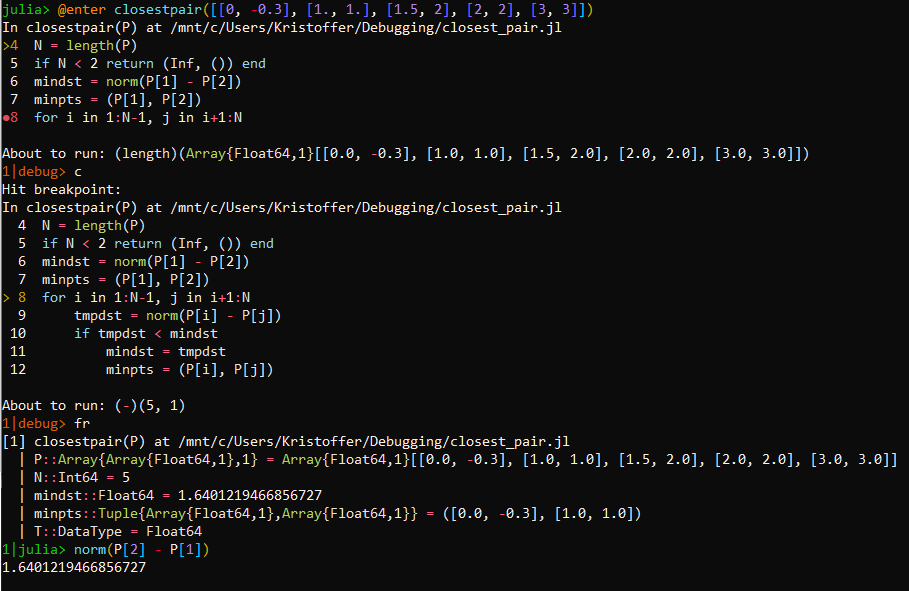
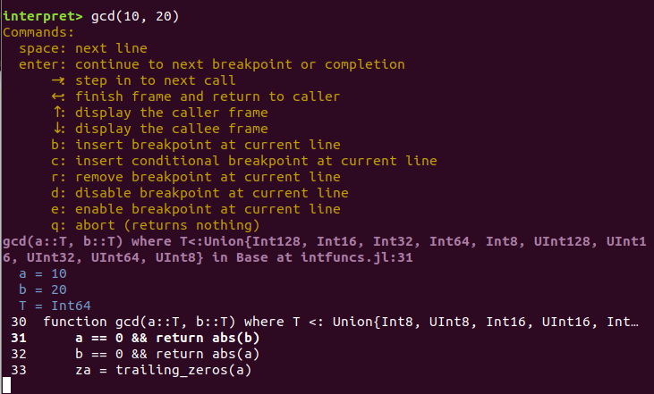

A Julia interpreter and debugger
The authors are pleased to announce the release of a fully-featured debugger for Julia. You can now easily debug and introspect Julia code in a variety of ways:
Step into functions and manually walk through your code while inspecting its state
Set breakpoints and trap errors, allowing you to discover what went wrong at the point of trouble
Interactively update and replace existing code to rapidly fix bugs in place without restarting
Use the full-featured IDE in Juno to bundle all these features together in an easy to use graphical interface
The debugger is itself a collection of tools that enable those features. The core is powered by an interpreter that can faithfully run Julia code while allowing various front-ends to control its execution. Each front-end is its own package: Juno incorporates the debugger into its IDE, Rebugger provides a REPL text UI, and the traditional step/next/continue command-line interface is provided by Debugger. All these new debugging capabilities seamlessly integrate with Revise, so that you can continuously analyze and modify code in a single session.
A brief user-level introduction to the front end debuggers
To orient potential users to the debugger front-ends, here we include a couple of screen shots that highlight the new capabilities.
Juno
Juno provides a rich user interface around the interpreter and allows
you to set breakpoints and step through directly in the source
code. The debugger REPL can execute arbitrary code in a local context
and the Workspace allows you to inspect local variables. The screenshot
below shows a small debugging session for gcd:

The Juno.@run macro interprets your code and drops you in a
debugging session if it hits a breakpoint, while Juno.@enter allows
you to step through starting from the first line.
Debugger and Rebugger
If you have a different favorite editor than Atom—or sometimes work
in remote sessions through a console interface—you can alternatively
perform debugging via the REPL. There are two REPL interfaces:
Debugger offers a “step, next, continue” interface similar to
debuggers like gdb, whereas Rebugger aims to provide a console interface
that is reminiscent of an IDE. Debugger has some capabilities that none
of the other interfaces offer (e.g., very fine-grained control over
stepping, the ability to execute the generator of generated functions,
etc.), so it should be your go-to choice for particularly difficult cases.
Below is a screenshot of a short session using Debugger.jl, showing some
of its features:

In the screenshot, the function closestpair is debugged by prepending the call
with the @enter macro. Execution is then suspended on the first line of the function (line 4)
and it is possible to see a breakpoint on line 8. Upon running the command c (short for “continue”),
execution is resumed until a breakpoint is encountered. At this point, the command fr
(short for “frame”) shows all the local variables and their values at the point
where the execution of the code suspended due to the breakpoint.
Finally, a “Julia REPL mode” is entered using the ` key.
This gives a normal Julia REPL mode with the addition that the local variables are available.
Rebugger enters calls via a key binding. To try it, type gcd(10, 20)
and without hitting enter type Meta-i (Esc-i, Alt-i, or option-i).
After a short pause the display should update; type ? to see the
possible actions:

Rebugger also features an “edit” interface. For more information, see Rebugger’s documentation.
An overview of the packages
With several packages making their initial debut, and some old ones getting new capabilities, we felt it would be appropriate to provide an overview of the underpinnings of the new ecosystem.
JuliaInterpreter
JuliaInterpreter is the lynch pin of the entire stack; it contains the logic needed to evaluate and inspect running Julia code. An interpreter lends itself naturally to step-wise code evaluation and the implementation of breakpoints.
JuliaInterpreter descended from an original package ASTInterpreter2 written by Keno Fischer. In its original form (prior to Jan 2019), ASTInterpreter2 was a fairly small but sophisticated package, capable of handling many advanced aspects of Julia’s internal representation of code. It was in need of updating to the many changes in Julia 1.0, although most of that work had already been done by Neethu Joy in late 2018. When we began our own efforts, we finished the updates and decided to extend it in many ways:
JuliaInterpreter became recursive-by-default, interpreting calls all the way down to the
ccalls, intrinsic functions, and builtin functions that define Julia’s lowest levels. By running virtually all code through the interpreter, it became more straightforward to implement breakpoints and trap errors.JuliaInterpreter received numerous performance enhancements, and now can run step-wise through code at roughly 50× its original speed. These optimizations reduce—but come nowhere close to eliminating—the most serious disadvantage of running all code in the interpreter: slow performance. It is hoped that the performance gap between compiled and interpreted code, which can be many orders of magnitude, will narrow in the coming months. However, the interpreter will always be slower than compiled code.
It’s also worth noting that there are cases where the interpreter feels faster, at least on initial execution. Julia’s JIT compiler produces excellent results, but all that code-analysis takes time; there is interest in exploring whether running more code in the interpreter could reduce latency, a.k.a. the “time to first plot” problem. JuliaInterpreter is a potential tool for exploring that trade off, and it appears that not much additional work would be needed.
- JuliaInterpreter gained the ability to interpret “top-level code”, for example the code used to define packages and create test suites. This was a major change, partly because top-level code uses an expanded vocabulary, but mostly because top-level code can define new modules, structures, and methods, which in turn introduces the need to manage “world age,” the counter that determines the visibility of methods to callers. (If this fails, you see errors like “method is too new to be called…”).
Supporting top-level code allowed JuliaInterpreter to achieve two
goals: the ability to serve as the foundation of new code-parsing
abilities for Revise, and the ability to run test suites originally
designed for compiled Julia code. Once we had top-level execution
partially working, we
decided
to evaluate JuliaInterpreter against the most extensive single test
suite available, that of Julia itself. This revealed dozens of bugs
in areas like the calling of C libraries (ccall, @cfunction, and
cglobal), llvmcall, keyword-argument functions, generated
functions, anonymous functions, struct definitions, global
variables, the handling of try/catch, locks and threads, and the
treatment of @evaled code. Some of these problems were isolated
for us from the test suite failures by two additional contributors,
Gunnar Farnebäck and Don MacMillen.
As of this writing, most of the cleanly-isolated problems have been fixed. While we are still far from perfect, the pursuit of such a demanding goal has contributed extensively to the robustness of these young packages.
- JuliaInterpreter gained support for breakpoints. While not strictly
a feature of interpreters, they are necessary to build a capable
debugger and can be viewed as an additional form of control-flow
within the interpreter itself. These breakpoints can be set manually
with functions
breakpointand a macro@breakpoint, manipulated in Juno, Rebugger, or Debugger, or added directly to code with the@bpmacro. Existing breakpoints can bedisabled,enabled, orremoved. We support setting of breakpoints at specific source lines or on entry to a specific method, conditional and unconditional breakpoints, and can automatically trap errors as if they were manually-set breakpoints.
To explore the interpreter in its own right, you can start like this:
using JuliaInterpreter
A = rand(1:10, 5)
@interpret sum(A)If all is working well, you should see the same answer you get from
running sum(A) without @interpret.
LoweredCodeUtils
LoweredCodeUtils is the most specialized and opaque of the new packages. Its purpose is to build links between multiple cooperating methods. For example, the seemingly-simple definition
mymethod(x, y=0; z="Hello", msg="world") = 1actually creates 5 methods: one “body method” (here, simply returning
1), two “positional-argument” methods (ones that do not accept any
keyword arguments), and two “keyword function” methods (ones that get
called when you supply at least one keyword argument, then fill
in defaults and standardize order). Because all five of these arise
from the same user-supplied expression, they need to be implicitly
linked in order to provide a satisfying user experience. In
particular, changes to source files cause the line numbers of compiled
methods to become outdated; if we didn’t correct that, Juno might open
a file to the outdated line number when stepping through
code. LoweredCodeUtils does the source-level analysis to discover
these associations and handle differences that arise when parsing the
same file multiple times.
If you ever wanted to be able to parse Julia code and extract the signatures of the methods it defines (without redefining the methods), LoweredCodeUtils is the package for you.
CodeTracking
CodeTracking was designed to act as a simple, lightweight “query API” for retrieving data from Revise. Essentially, LoweredCodeUtils performs analysis, Revise manages changes that occur over time, and CodeTracking informs the rest of the world. For CodeTracking to do anything interesting, you need to be running Revise; to allow CodeTracking to be a lightweight dependency, it relies on Revise to populate its own internal variables.
See CodeTracking’s README for more information.
Revise and Rebugger
Thanks to a rewrite based on JuliaInterpreter, Revise and Rebugger are
better (in some cases, much better) at their core tasks. In
particular, if you used an earlier version of Rebugger, you may have
noticed that it was defeated by many language constructs (e.g.,
functions containing keyword arguments, @eval-generated methods,
etc). Most of the underlying causes were resolved by
LoweredCodeUtils, which is in turn used by Revise, which then feeds
the necessary data to CodeTracking for consumption by Rebugger. As
one measure of the difference, of the more than 10,000 methods in
Base, Revise 1.1.0 fails to capture 1,425 method signatures (a failure
rate of 13%). In contrast, Revise 2.0.0 misses only 10 (<0.1%).
Consequently, in addition to the new “interpret” interface, the new Rebugger is much better at its original “edit” interface, too.
Revise (and consequently Rebugger) has also gained some other new abilities, like handling methods defined at the REPL. In the longer term, the deep analysis of code permitted by JuliaInterpreter and LoweredCodeUtils may support features that were formerly out of reach.
Summary
This has been only a high-level overview. Some of the individual packages have extensive documentation, and interested readers are encouraged to work through it. For anyone looking to develop a deeper understanding of the internals of Julia’s code, the new packages provide a powerful set of tools for introspection and analysis. And of course, we hope that the new debugging capabilities further accelerate Julia’s rapid development, and make it that much more fun of a language to use.